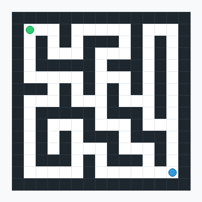

Maze searching algorithms are computational methods designed to find paths through mazes or graphs from a start point to a goal. Different algorithms offer different trade-offs in terms of speed, memory usage, and whether they guarantee the shortest path.
